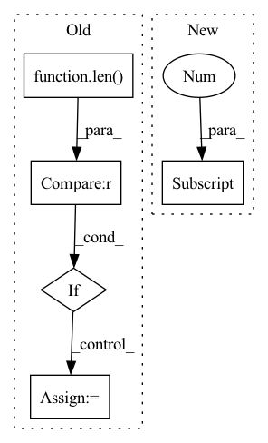

Pattern ID :3079
Before Change
// split into multiple time segments, assumes in 2nd dim
segmented_x = [list(torch.split(x, x.shape[2] // self.split_block, dim=2)) for x in X]
for x in segmented_x:
if len(x) > self.split_block :
x[-2] = torch.cat(x[-2:], dim=2)
ret_segments = []
for i in range(self.split_block):After Change
// by default N=1, does not split
segment_shapes = [[x.shape[2] // self.split_block] * self.split_block for x in X]
for x, seg_shape in zip(X, segment_shapes):
seg_shape[-1] += x.shape[2] % self.split_block
segmented_x = [torch.split(x, seg_shape, dim=2) for x, seg_shape in zip(X, segment_shapes)]
// apply MSAFIn pattern: SUPERPATTERN
Frequency: 3
Non-data size: 5
Instances Fragment ID: 10130906
Project Name: anita-hu/msaf
Commit Name: c784fa99febfbf86ef8aa8f6fa708227a7251ab1
Time: 2020-12-30
Author: anitahu113@gmail.com
File Name: MSAF.py
M Class Name: MSAF
N Class Name: MSAF
M Method Name: forward(2)
N Method Name: forward(2)
M Parent Class: nn.Module
N Parent Class: nn.Module
M File Name: MSAF.py
N File Name: MSAF.py
M Start Line: 131
M End Line: 145
N Start Line: 133
N End Line: 139
Before Change
nn.init.constant_(self.bias, val=0)
def forward(self, x, node_embeddings):
if len(node_embeddings.shape)==2 :
node_num = node_embeddings.shape[0]
supports = F.softmax(F.relu(torch.mm(node_embeddings, node_embeddings.transpose(0, 1))), dim=1)
else:
node_num = node_embeddings.shape[1]
supports = F.softmax(F.relu(torch.einsum("bnc,bmc->nm", node_embeddings, node_embeddings)), dim=1) After Change
x_g = []
support_set = []
for support in supports:
support_ks = [torch.eye(support.shape[0] ).to(support.device), support]
for k in range(2, self.cheb_k):
support_ks.append(torch.matmul(2 * support, support_ks[-1]) - support_ks[-2])
support_set.extend(support_ks) Fragment ID: 10130904
Project Name: zezhishao/basicts
Commit Name: 4adec9a0403655584de5a4e97e41611c179b0f1e
Time: 2023-02-26
Author: 864453277@qq.com
File Name: basicts/archs/arch_zoo/megacrn/megacrn_arch.py
M Class Name: AGCN
N Class Name: AGCN
M Method Name: forward(3)
N Method Name: forward(3)
M Parent Class: nn.Module
N Parent Class: nn.Module
M File Name: basicts/archs/arch_zoo/megacrn/megacrn_arch.py
N File Name: basicts/archs/arch_zoo/megacrn/megacrn_arch.py
M Start Line: 16
M End Line: 25
N Start Line: 18
N End Line: 24
Before Change
outputs = [inters[0]]
for i, conv in enumerate(self.output_convs):
out = F.interpolate(outputs[-1], scale_factor=0.5, mode="nearest") // resize(P3td)
if i < len(self.output_convs) - 1 :
out = self.fuse([x[i+1], inters[i+1], out]) // P4in + P4td + resize(P3td)
else:
out = self.fuse([inters[i+1], out]) // P7in + resize(P6td)
outputs.append(conv(out)) // P4out = conv(P4in + P4td + resize(P3td))
return outputsAfter Change
outs[0] = tds[0]
for i in range(self.num_levels - 2):
outs[i+1] = self.out_fuses[i]([x[i+1], tds[i+1], self.downsample(tds[i])]) // P4in + P4td + resize(P3td)
outs[-1] = self.out_fuses[-1]([x[-1] , self.downsample(tds[-2])]) // P7in + resize(P6td)
return outs
Fragment ID: 10130902
Project Name: gau-nernst/vision-toolbox
Commit Name: 0844b6bcb142e63b09cf6ae44e5087c20d52c380
Time: 2022-04-10
Author: gau.nernst@yahoo.com.sg
File Name: vision_toolbox/necks.py
M Class Name: BiFPNLayer
N Class Name: BiFPNLayer
M Method Name: forward(2)
N Method Name: forward(2)
M Parent Class: nn.Module
N Parent Class: nn.Module
M File Name: vision_toolbox/necks.py
N File Name: vision_toolbox/necks.py
M Start Line: 163
M End Line: 180
N Start Line: 160
N End Line: 172